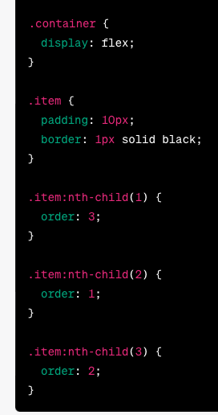
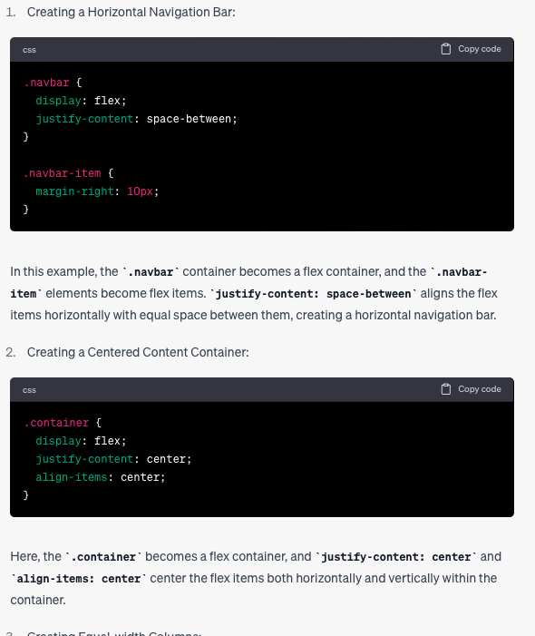
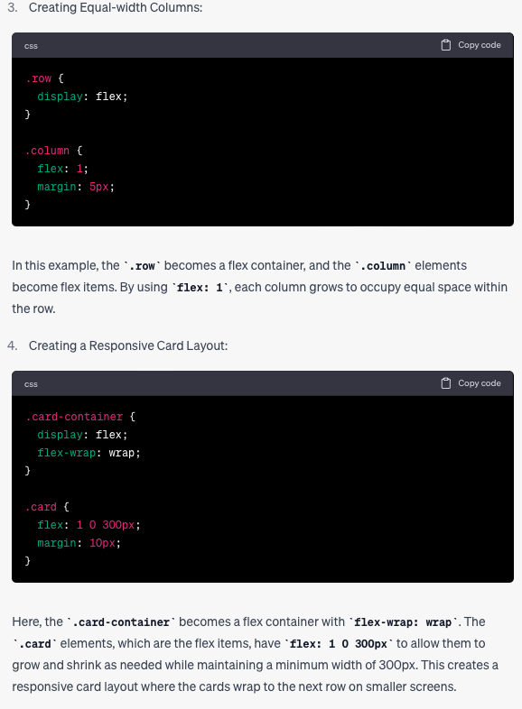

flexbox
flex box, short of Flexible Box Layout Module
- flexbox is a CSS layount module.
- provide a flexible way to arrange and align elements within a container.
- create responsive layouts that can adapt different screen size and orientation.
key concept of Flexbox include:
- flex container: the parent element that contain flex items. by applying the display:flex or display:inline-flex
- flex Items: the child element within the flex container. this could horizontally or vertically arranged based on flex container's direction.
- Main Axis and Cross Axis: the main axis is the primary axis along which flex items are laid out. either horizontally (row direction) or vertically (column direction)
- Flex Direction: is define by the main axis. it can be set to row (left to right) or row-reverse (right to left), column (top to bottom) or column-reverse (bottom to top).
- Flex Property: control the layoutn and behavour of flex items, including 'justify-conten', 'align-items', 'flex-wrap', 'align-content'.
examples
div1
div2
div2
div1
div2
increase content
div2
Justify-content: control the alignment of flex items along the main axis. and just-congtent accept the following values.
- flex-start: align items to start the main axis.
- flex-end: align items to end of main-axis.
- center: aling items to center of main axis.
- space-between: distribute flex-item evenly along the main-axis, with first item aligned to start and last item aligned to the end.
- space-around: distribute flex-items evenly along the main axis, with equall space around the items.
- space-evenly: Distribute items evenly along the main axis, with equal space around and between them.
align-items control and align flex-items along the cross-axis of flex-container. the cross-axis perpendicular to the main-axis. the align-items property acce the following values.
- flex-start: align items to starty of cross-axis.
- flex-end align items to the end of cross-axis.
- center: align items to center of cross axis.
- baseline: align items along their baseline.
- strech: stretches items to fill the container along the cross axis.
in flexbox the order property is ued to control the visual order of flex-items within the flex-container.

in above example, items are assigned in diffirent order
- item 2 (order:1)
- item 3 (order:2)
- Item 1 (order:3)
we have increase the content of div2 in flex-itm. and the flexbox has incresed too.
the reason we called flexible Box layout Module is because it is flexible wiht layount width and height. it just take as much as space as it need.  